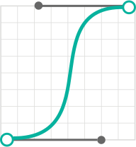

当考虑到动画实现的时候，设计师和开发者必须对动画的设计理念保持高度的一致，无论是对原型的理解，还是实现的一些知识。将概念转化为代码往往需要灵活的思考方式，因为代码往往有多种多样的方式实现动画。
下面提供了一些简单的步骤，以便开发和设计合作。一般来说，需要确定元素的属性，动画持续时间，关键帧，动画曲线，以及延迟。
属性代表着物体随时间变化的变化特点。这个地方可以参考IBM动画设计规范基础部分中的 构建模块。
我们来看一下顶部导航的这个动画案例中元素属性的改变。当悬停状态下，顶部导航栏对应选项下方的暗条增高，然后在两个链接之间水平滑动。点击状态下，按条增高。这个动画主要使用了元素的比例和位置属性。
一旦在文档中记录了属性后，下面就需要根据属性随时间的变化记录关键帧。关键帧的记录非常简单，只需要在时间的关键节点——也就是属性变化的节点上记录时间。
关键帧代表着在某个特定时间状态下，记录参数的帧，可以用来表述不同的属性（例如位置、缩放、不透明度、旋转等），关键帧定义了单个动作的开始和结束状态的属性变化。
开发者一半会把关键帧写成百分比,这和我们在设计中根据时间轴伤的时间帧来设置关键帧的思维模式不同。将关键帧转化为百分比 的好处是，整个动画可以按时间成比例缩放，从而调节快慢。
根据上面的顶部导航栏案例，下面提供了三个关键帧，展示了元素是如何随时间变化的。
- 关键帧 1: 高度增加6px
- 关键帧 2: 水平位移变换
- 关键帧 3: 高度增加100%
当从AE或其他工具中提取关键帧时，时间轴可以提供很直观的动画流程展示，也方便设计者标注动画。
基于状态的改变，动画很可能会相应的提供反馈。在CSS中可以定义开始和结束状态。例如上面的顶部导航栏案例，类的改变由Javascript处理。这也就意味着由 CSS 和 Javscript 定义的代码可以触发动画。
nav ui li:hover {
height: 6px;
transform: translateX(0);
}
nav ul li:active {
height: 100%;
}
使用CSS，关键帧可以通过不同的类来定义，CSS转场可以处理动画曲线，处理属性随时间变化的特性。
在 CSS 关键帧技术中，更复杂的动画不仅仅要处理“起点和终点”。而在设计中处理转场效果和动画时，所要添加的关键帧和编程语言的实现思路也是不同的。但是，不管是时间轴设计，还是编程，在“属性与时间”上的核心理念是一致的。
当标注完关键帧后，需要开始标注动画的持续时间。持续时间表示了动画所持续的时间长度。在设定持续时间的时候，需要考虑可用性和交互性，依此来设定持续时间。动画的持续时间应该让用户感觉自然、反馈迅速。
持续时间的计算可以基于FPS，首先了解动画完成所需要的帧数。在AE文件中，你可以观察到帧速率（在合成设置中，Command＋K）。而在QuickTime视频中，帧速率可以在影片检查器（Command ＋ I）中找到。
完成了上面几步的标注和设定之后，就已经完成了动画实现的基础部分，不过还需要使用动画曲线来增加动画的细腻感。动画曲线函数基于数学表达式来创建贝塞尔曲线，这条曲线可以用图标来展现，展示了属性变化的加速和减速。

Cubic Bezier
(.8,0,.2,1)